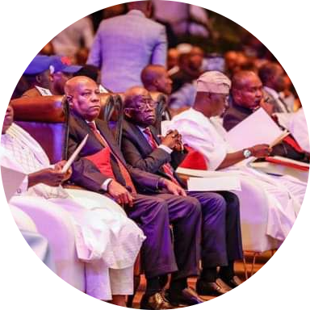

One of Leading APC member Senator Kashim Shettima has given us another lamba

Vice-Presidential candidate of the All Progressives Congress, APC, Senator Kashim Shettima, has said if elected in 2023,
the Asiwaju Bola Tinubu-led government will end insurgency within six months and one year.
He said this during a townhall meeting between Tinubu and the business community in Lagos.
Adebanjo: I know how to deal with those who met Tinubu
Tinubu: What Buhari told me when I asked him to pick my running mate
“Within six months and one year, my leader (Tinubu) will mobilise the leadership to end this madness,” he said.
| SERVICES |
Double Tick or Single Tick |
| Withdrawal |
YES |
| Transfer |
YES |
| Data Selling and Airtime Convertion |
YES |